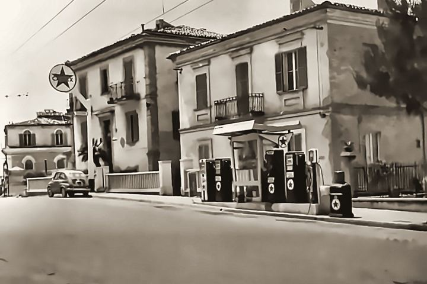
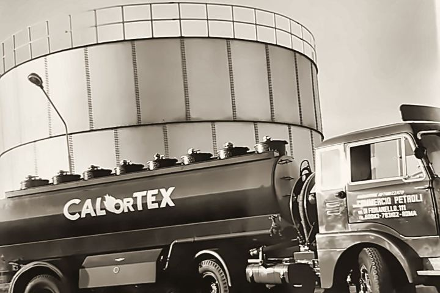
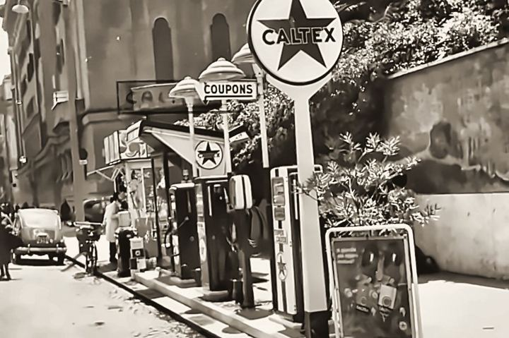
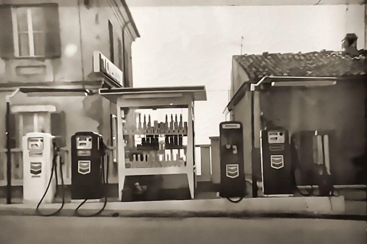
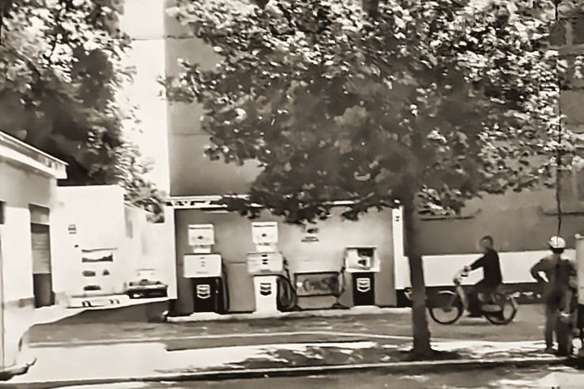
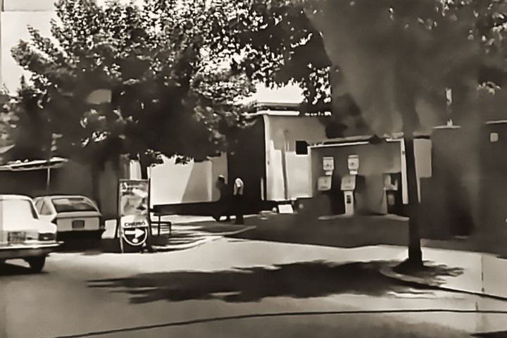
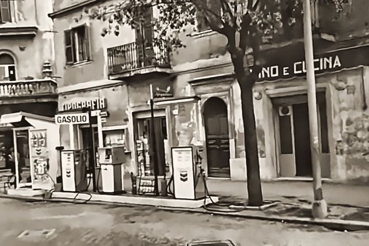
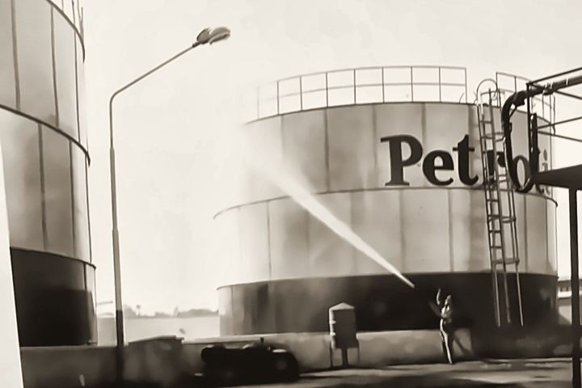
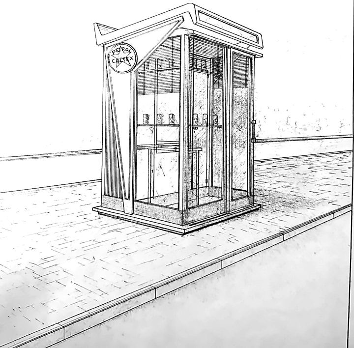
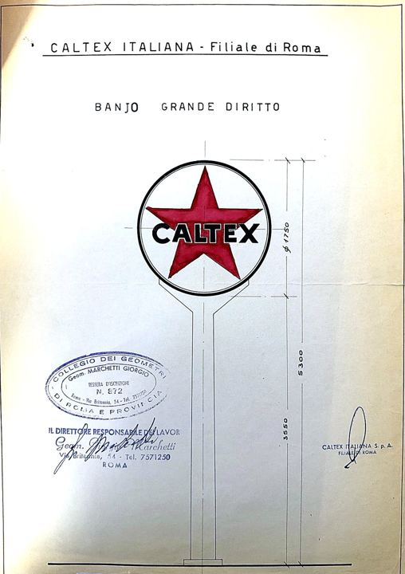

Stazioni di servizio
29 distributori con prezzi self pubblicati ogni giorno, carte carburante accettate, locker pacchi, bar tabacchi e autolavaggio.
T.Petrol › Chi siamo
Chi siamo
T.Petrol nasce nel 2015 dalla scissione di un ramo d'azienda di CP Commercio Petroli, storica realtà del settore petrolifero attiva dal 1952. Un nuovo progetto imprenditoriale, orientato a una gestione flessibile e dinamica e allo sviluppo di rapporti commerciali e partnership con le principali compagnie petrolifere. Oggi gestiamo una rete di stazioni di servizio tra Lazio, Umbria e Abruzzo.
Dal 1952 distribuiamo carburanti. Abbiamo attraversato cambiamenti di mercato e cambi di bandiera accanto a grandi marchi internazionali. Le insegne delle nostre stazioni sono cambiate più volte, ma non è cambiato ciò che ci distingue: la presenza sul territorio, l'esperienza e l'impegno di ogni giorno.
Cambiano i marchi, cambia il mercato. Le nostre radici restano le stesse.
Foto e disegni d'epoca dei nostri archivi: stazioni, mezzi e progetti di quando i marchi si chiamavano Caltex e Chevron.











Gestiamo direttamente la nostra rete e offriamo ad aziende e proprietari di impianti una soluzione a 360 gradi.
29 distributori con prezzi self pubblicati ogni giorno, carte carburante accettate, locker pacchi, bar tabacchi e autolavaggio.
Carta carburante per aziende e professionisti e fornitura di gasolio extrarete per riscaldamento, condomini e aziende.
Acquisizione, convenzionamento con le principali compagnie, gestione diretta e consulenza tecnica.
Abbiamo installato impianti fotovoltaici, affiancati da batterie di accumulo, in 8 stazioni della rete. L'energia prodotta illumina i piazzali anche di notte e viene condivisa con il territorio attraverso la comunità energetica CER Nova ETS, a cui aderiamo.
Tra le imprese italiane che crescono di più: